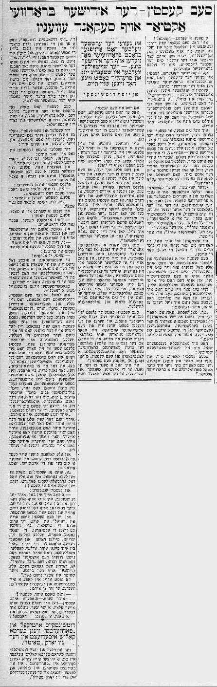

Sam Kasten – der Yidisher Brodvai actior auf second avenue
This article was published in the Forverts on 1936-04-17 as part of a series of articles that Joseph Rumshinsky wrote about actors in the Yiddish Theater.
Sam Kasten – the Yiddish Broadway actor on Second Avenue
By Joseph Rumshinsky
He was the first to bring Broadway sensibility to the Yiddish stage. – The actor who is always young and joyful even though his hair is already white.
A dance, a jump - that’s all!
That’s how Sam Kasten has danced his way through his little world for 65 years, and in his dancing and jumping on Second Avenue, people see him move with the same ease as you’d expect to see on the Broadway stage.
Yes, from Broadway. Kasten was the first to bring a Broadway sensibility to the Yiddish stage. His couplets included “Fifty-fifty”, “The line is busy_”, ”A mistake”_. He felt that we needed to attract an English-speaking audience to the Yiddish stage. He already felt this way 70 years ago.
I don’t mean to say that Kasten was someone who copied American actors, because his best roles were all true Jewish types - chasidishe, enthusiastically-Jewish characters, but the Jewish East Side1 which has yearned for Broadway comedians because they are strangers to the East Side, has long seen Kasten as a comedian “a là Broadway.”
Every writer, composer, sculptor, follows a well-known artist from an earlier era. In the art world, people say that someone belongs to such-and-such school. For example in the literary world, people say, “He is a classical writer.” In the music world, “he belongs to the Wagner school.” In the painting world, “he belongs to the Rembrandt school,” and so on and so forth.
Actors too have schools. They don’t copy, but follow in someone else’s the footsteps. Sam Kasten takes after Sigmond Mogulesko. He always imitates Mogulesko’s little dances and their little idiosyncracies, but in a Kasten-esque sort of way. Mogulesko himself actually pointed this out - three days before his death, I went to visit Mogulesko, and feeling like this was perhaps the last time I would speak to him, I asked:
“Mr. Mogulesko, why don’t Yiddish actors copy you? Comedians try to imitate Bernstein, Torenberen2 (a comedian from the earliest days in America). But nobody imitates you.”
Mogulesko answered my quietly, with his Sigmond Mogulesko smile, “Sam Kasten does, and so very well. But when Sam Kasten copies me, I suddenly transform into a Broadway actor.”
And that’s who Sam Kasten is.
When he isn’t performing, you can see him out and about in his “Sam Kasten-esque” manner. His goal is to attract the American youth to the Yiddish theater, and in this he was once successful. My son - now a 30-year-old grown man - used to imitate Kasten - he’d talk like him, sing like him, walk, dance, and even eat and sleep with Sam Kasten’s songs on his lips. And my child was only one of many such children.
But it was in chasidishe roles where actors would dance in quartets and sing little Jewish duets - real Jewish “kugel duets”3 - and in the days when Sam Kasten would appear on stage with the old Lazer Zuckerman, who has been referred to as “The Father of Yiddish Comedians,” could you really see Kasten’s true essence. As he used to say, “If I wanted to, I could stop acting a là Broadway and be a real”Goldfaden-actor”4. What I mean by “Goldfaden-actor” is - my opinion after many years of experience in the Yiddish theater is that just a serious English-language actor can’t truly come into his own until he performs Shakespeare, neither can an authentic Yiddish actor truly be a good actor until he has mastered the Goldfaden school and absorbed Goldfaden’s prose and songs.

Though he ran to Broadway to see every American play and listen to and learn by heart almost every joke from American comedians, Sam Kasten was raised on Goldfaden’s prose and music. Kasten is himself a blend of the old Goldfaden and the modern Broadway theater. You could say he’s of the “Sam Kasten era.”
And I have a gripe with the youth, to today’s dancers and jumpers - or as the Americans call them, “the jumping jacks” - who follow only the Broadway style and have unfortunately nothing to do with the Yiddish theater, even though they are on the Yiddish stage. Not only are they totally divorced from the Yiddish stage even while appearing on it, they aren’t even interested in Yiddish writing or the Yiddish press, except to check on Fridays if their picture is featured on the “theater page.”
Sam Kasten indeed brought “a là Broadway” to the Yiddish stage, but as mentioned, from behind the Goldfaden and Gordin curtain.
David Kessler and Sam Kasten were very good friends and used to kibbitz, and their kibbitzing would go something like this5:
David Kessler would meet Kasten in the street and say to him:
“Hello, Kasey (his nickname for Kasten). I can do it too.” And in the same breath, David Kessler would put his walking stick under his arm do a little dance and a jump.
Kasten would answer him, “No, David, that’s not it. You’re making it too dramatic.”
Kessler would become serious: “Look, look, Kasey. I’ll do it again.” And he’d do a jump and a dance.
Kasten would say, “That’s a little bit better, but still too dramatic.” And then Kasten would position himself to dance and jump in his own way, and he’d say: “Nu, David, how do you like it?”
And David Kessler would hug him and grumble, “Kasey, you’re alright!”
No matter how interesting or strong a play might be, the lives of actors are always more interesting than the roles they play. They really are engimas.
Our dear Sam Kasten, for example. He made it through the early days, the cradle of the Yiddish theater. And by “made it through,” I mean he toiled through hunger, suffering, a penniless existence, days of nothing to eat, and sleepless nights. When he finally made a career for himself on the stage, he didn’t follow the norms that the doctors and private citizens alike preach. Kasten ate whatever his heart desired, drank whatever his eyes could see, and immersed himself in the typical actor’s nightlife. Yet admirably, every morning at rehearsals when the other actors would show up completely exhausted after a sleepness night, Kasten stood tall with his white head of hair and full-blooded face and neatly pressed suit with script in hand, dancing and jumping. He would tease his colleagues, saying “You punks, you young rascals… you’ve finished before you’ve even gotten started! You have your”shoulders on your heads”6 before your hair is even grown out. You’re hoarse before we’ve even heard you sing properly.”
And everyone would look at Kasten almost with envy, and the kibbitzers among them would say ironically, “Oh sure, look at Kasten. You do everything you’re supposed to you, and you end up looking like him!”
And Kasten would answer, “I’ll have you know, you little punks, I do everything I’m supposed to. I’m 65 but I feel like 30. You’re not even up on the stage yet, and still you’re on your way down.”
And when Sam Kasten would come around the Cafe Royal and look around the tables where all the actors sat and the so-called stars gathered, screaming and divvying up roles and doling out orders. He would think to himself, “I’m jealous of you - Adler, Kessler, Mogulesko - who don’t have to see the chaos of today, this toho va’boho7, this hakol shochtin8. Yes, Gordin was right: Everyone slaughters on the stage, but none of the slaughter is kosher.
If a journalist entered the cafe, upon seeing Kasten he would say, “How are you, Kasten?”
And Kasten would reply, “If I were in your place, a writer, I would write that all of life is a dance, a jump - that’s all!”
Footnotes
Lower East Side, NYC↩︎
I am unable to find a reference for this person: טאָרענבערען↩︎
קוגעל–דועטעל↩︎
i.e., thoroughly Yiddish, not American↩︎
Read Sam’s version of this in his memoirs↩︎
perhaps an inverse idiom of “good head on your shoulders” as a charming insult↩︎
chaos; this is a Biblical phrase in Genesis describing the chaos before the creation of light↩︎
Talmudic phrase technically provisioning that anyone who can perform kosher slaughter is permitted to do so↩︎